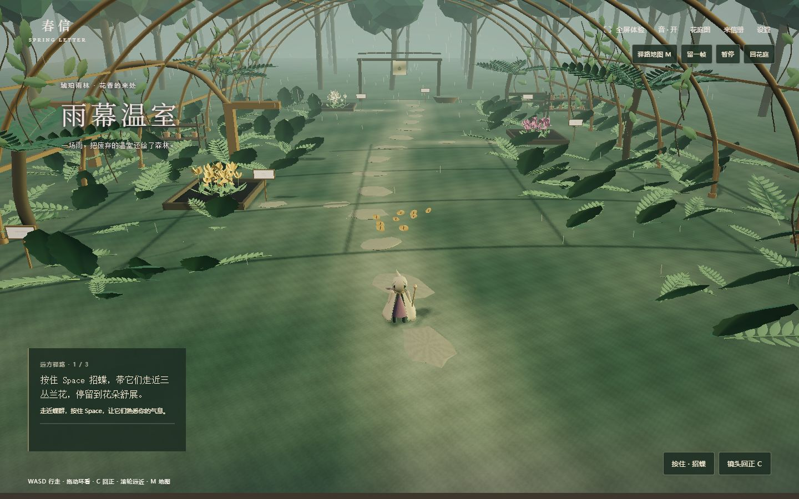

06
雨幕温室
琥珀铜色 × 雨林青绿 · 陪伴与等待

温室实机截图暂不可读取未能加载此张实际游戏画面。请刷新页面，或通过下方「查看原图」检查图片是否可访问。
FOLLOW / POLLINATE让蝶群愿意
让蝶群愿意
跟上你的脚步。
按住招蝶，再放缓脚步。带着蝶群穿过铜拱、悬根与湿润的叶丛，停在三处兰花坛边，等花朵逐渐苏醒。树林深处的驿门，为这段安静的穿行留下方向。
Space 招蝶
移动放缓 · 花坛旁停留
移动放缓 · 花坛旁停留
带走一缕「花香」